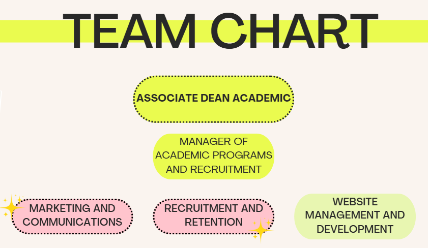
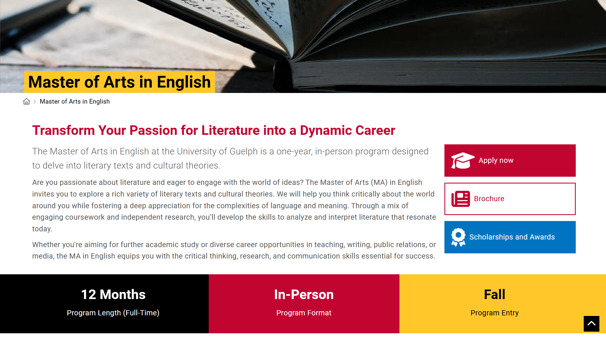
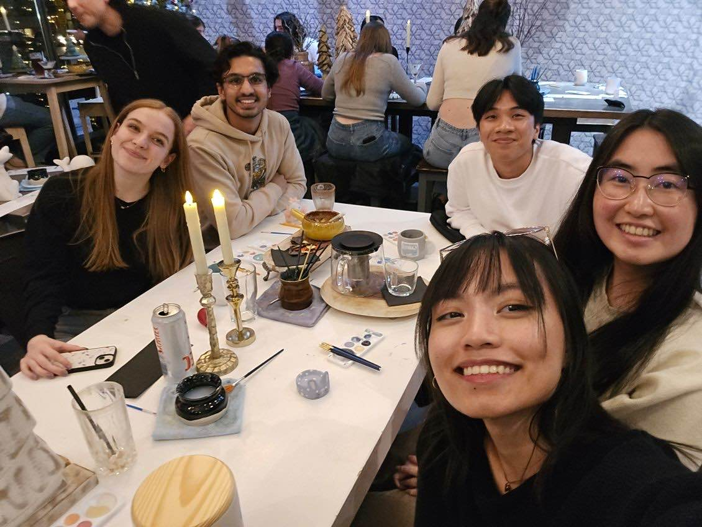
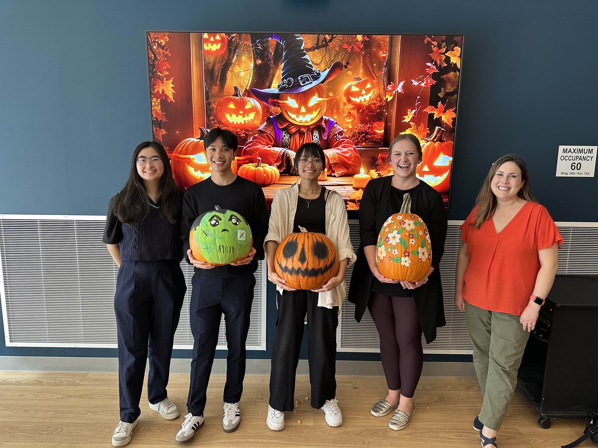

Work Term Report 2
Introduction:
After having such an invaluable Summer 2024 term with the College of Arts at the University of Guelph, I was so ecstatic to return for another (F24) and continue my placement! Meeting new additions to our team as well , I was especially excited to work with our amazing team again. Additionally, despite remaining as a Website Redesign Coordinator with the same job responsibilities, I learned and gained so many new skills and experiences. I have so much to be grateful for within the College of Arts, which I will happily ramble about here!
About My Team:


Same as Summer 2024, our Marketing and Communications team is located within the Dean's Office at the College of Arts, University of Guelph (thank you, my coworker Callie, for the team chart!). Our team continues to support the College of Arts and provide marketing, communications, recruitment, and web services to college stakeholders.
Our team has three main responsibilities regarding the College of Arts; Marketing and Communications, Recruitment and Retention, and Web Services. For this term, I remained in the web team (AKA The Websters)!
✉️ Marketing and Communications
- Strategic marketing and communications planning for the College of Arts
- Hosting/taking lead in university- and/or college-wide events for the College of Arts
- Newsletters and story pieces
- Internal communications to the college
- Social media and digital media communications
- University and college branding guidelines
🎤 Recruitment and Retention
- Content and structure of Recruitment materials and events
- Volunteer outreach
- Room booking and logistics
- Management of merchandise
- Ambassador Team Leadership
💻 Web Team (Websters)
- Website and intranet structure strategy, development, and management
- Users experience strategy and development
- Web system (Drupal 7, Drupal 9/Content Hub, SharePoint) support for the college's students, staff, and faculty
- Strategic recruitment and communications web pieces for future, current, and graduate students
Similar to the previous term, our team heavily focused on being innovative and effective with each of our projects and actions this semester. In this Fall 2024 term, we also made it a priority to showcase our work and efforts to both internal and external staff and stakeholders. Our team had an overwhelming amount of work this semester and barely enough resources to compensate for it. However, many staff and stakeholders outside of our immediate team were unaware of the load we were bearing. This resulted in even more external tasks and requests that our team could not comfortably handle. As such, our team began to keep track of and audit all of our projects and tasks starting from September 2024-- no matter its size (big, small) or status (planned, in progress, finished). In just the Web Team, we currently have 80+ tasks and projects documented! And as a Marketing and Communications team as a whole, we have worked on 230+ projects!! As many stakeholders often don't understand the extent of our work and tasks, especially regarding the college website, this audit showcases how busy our team is and allows them to understand that our team may need more time and resources until we can get to their requests.
Our goal remains the same; to build recruitment and retention among our audiences, and to support the college through external and internal communications.
Returning as a Website Redesign Coordinator
In these last four months, I built and expanded upon everything I learned and did during the previous term (S24). For a review of S24 and a deeper dive into our main tools, please refer to my Work Term Report 1.
Otherwise, here is a quick summary of our main platforms!
Drupal 7
The University of Guelph's former content management system and is where the majority of the College of Arts web pages live.
- Contains both internal and external content.
Drupal 9 / Content Hub
The University of Guelph's current content management system. Designed for external and public-facing content with a modern appearance, better user-experience and interface, Drupal 9 is only managed by the Marketing and Communications teams of each department.
SharePoint / Intranet
A Microsoft content management system that the college is using for the intranet that will contain only internal communications and college service units.
Throughout this term, my main projects have been recruitment and retention-based pages for the College! Specifically Graduate Program recruitment pages and pages for current students in each program within the College of Arts.
Graduate Program Recruitment Pages:

As the university continues their website migration to a new, modern, and aesthetically pleasing platform, transferring the program recruitment pages has been a huge long-term project for my team. For Graduate Programs, we have been working on researching, designing, and implementing them into Drupal 9 / Content Hub since August 2024.
Taking charge of both the content and design of these Graduate recruitment pages, I have learned and built upon many different skill sets! With each step towards completion, I have learned…
Graduate Research and Content
- Condensing / simplifying long pieces of information
- Copywriting and review
- Learning how to write and communicate with different audiences who have various levels of comprehension
- Learned institutional processes and background information
Page Design and Implementation
- User Experience and Journey
- Order of Content
- How to create a modern and pleasant page without overstimulating the user
- Visual Literacy
Faculty Feedback and Review
- Client / Stakeholder relations and communications
- Taking client feedback and applying them
Current Student Pages:
Creating a page dedicated to providing program-specific resources and links to each major in the College of Arts is a heavy task! After creating a page template, my team and I dedicated weeks to researching and delving into the lives of 14 different programs.
With these pages being net-new, their content and page made directly for Content Hub and not Drupal 7, I was able to experience the very first steps in page development and planning. I learned…
These past eight months have been so invaluable and provided me a space to grow and thrive! Overall, I have gained experience in and learned:
Technical skills
- HTML and CSS
- Web management and development knowledge
- User experience
- Microsoft Office Applications, most notably Word and Excel
Soft Skills
- Team communication and collaboration
- Oral and written communication
- Project management
- Change management
- Organization and time management
Goals and Reflections
Goal 1 🎯
My first goal was to improve my confidence and ability to effectively articulate my speech in business settings, especially with people outside our team!
Reflection ✅
In my previous co-op term, one of my learning goals was oral communication and creating a strong, professional basis for it within myself and to those around me. For this term, my goal was to build upon, expand, and improve on the said oral communication skills I had developed.
I am very happy to say that I reached my measure of success and even more! I have become very comfortable communicating with my team— especially when it comes to providing feedback and personal opinions/suggestions. As this Fall is my second term with my team, with the help of their support, I have learned my capabilities and expertise in various areas and have built confidence in my technical aptitude. Through this confidence, my oral communication skills has benefitted greatly as I feel more prepared when speaking about my work and don't overthink or second-guess myself as often.
This growth has also impacted how I communicate orally with college staff and stakeholders outside of my team. Before, I was always very timid and hesitant around stakeholders and external staff. Despite doing the work and knowing the my projects inside-out, I always felt inadequately prepared when speaking and my communication wouldn’t be as strong as a result. However, this term, I took the lead for our web team when it came to sharing, explaining, and generally speaking to external members about our work and projects! My oral communication noticeably became more clear, effective and efficient to not only myself, but our stakeholders as well.
I am especially grateful to have learned and practiced these oral communication skills through such a supportive and kind team. Growing and thriving in such an amazing environment, I am confident that I will transfer and apply my new and improved oral communication skills to any of my future endeavors!
Goal 2 🎯
As the only full-time co-op student from the summer remaining on the web team, I hoped to effectively lead our new web team for the fall! Mainly, to act as a guide to our new members so that they have a great experience here and learn everything I did, and more, throughout this term.
Reflection ✅
Throughout this term, I took on many leadership roles within our web team and especially tried my best to mentor and lead our new co-op student!
Having only two full-time co-op students in our web team, the workload placed upon us was massive and, honestly, a little overwhelming. Having the most experience out of the two of us, I put in a lot of effort to mentor and guide our new co-op and take the lead for us two within our team and to stakeholders. This included creating the on-boarding for and training our new student, taking lead on projects, and being the main point of contact for anything related to our web.
Additionally, I tried my best to take more initiative in managing and supporting our team as a whole. Taking on an empathetic and people-first leadership style, this includes checking in with our members, providing wanted and needed assistance, asking for everyone's input, and supporting with change management and project management.
Overall, I learned a lot about taking initiative and how to navigate various people and projects within a team!
Goal 3 🎯
Having fewer members in our team this fall term, I wished to improve my organization and time management!
Reflection ✅
Working at a university, especially in the fall semester, is extremely work-heavy and busy! Especially so with our college web.
With only two full-time web students on our team, there was a lot for us to keep track of and work on. There were many projects, big and small, that we had planned, worked on, and tried our best to deliver throughout this term. However, although we didn’t have the same amount of support and resources as the previous summer team, the two of us still got a very impressive amount of work done! A great factor being our organization and time management methods.
Having so many projects and tasks on our plate, I learned a lot on how to improve my organization and time management, alongside communicative teamwork. This includes utilizing planners, audits, and general methods to track everything in a clear and efficient manner. I learned how to plan my time better to accommodate for deadlines, as well as how to organize large-scaled projects and all of their small details in a way that makes sense not only to me, but others as well. Additionally, through the process of developing these skills and methods, my analytical and logical aptitudes have also increased through the in-depth and step-by-step processes that management and organization requires.
Conclusions and Acknowledgments



I cannot believe I have already been at the College of Arts for eight months... time has flown by! I truly enjoyed and loved my time as a Website Redesign Coordinator in the Marketing and Communicatioms team so much. Not only has my placement increased my technical aptitude and understanding, but it has also pushed my interest and passion in the front-end field.
Being in charge of the maintenance and development of a College domain is a huge responsibility-- one I especially felt during this term. The graduate recruitment pages I have worked on will directly influence a student's decision regarding their future, and the College of Arts web as a whole is what staff, faculty, and students depend on for accurate and updated information. I worked with many faculty and staff this term as well regarding website requests, inquiries, and issues. I realized how impactful our work truly is, which motivated me to work even harder for the college as it have treated me so well. Despite how busy the term was, however, I still enjoyed every task and project I worked on! Within such a huge institution, I was able to see that every task, even if small, positively impacted and supported at least one person. Wanting my work to always positvely contribute and support others, I loved seeing the impact it had despite the workload. My experience this term helped me grow both technically and professionally; as I have learned so much about web development and how to conduct and navigate myself within a professional institution.
However, I am most grateful to my kind, amazing team! Last semester, I wrote about how they were one of the main reasons why I love going into work. However, they have moved their way up into being the biggest reason why! Same as before, all of my coworkers and I have created such a positive, kind, and supportive environment that brings excitement to my day-to-day life. Being surrounded by such generous and open people, all of who have the most admirable work ethics and expertise, has been so amazing and inspiring. As not every role comes with a team as great as them, I am so grateful that they were my first co-op placement. They all taught me so much and allowed me to thrive and organically grow in the most supportive and driven environment I could ask for. The professional skills I've learned here will transfer to every job I have, and I am so fortunate to have learned them at this college and team! Specifically, huge thanks and love to my supervisors Rachel Ruston and Kate Tschirhart, who have both provided me with so much guidance and mentorship. I am so appreciative to the rest of my team as well; Callie Gibson, Ella Holt, Rasneet Kaur, Hannah Andrea Rosario, Muhammad Uzair, and Psalm Eleazar Videna, for being such amazing colleagues and friends!
Nearing my last week in this role, I remember being saddened thinking about how my time with the team was ending... however, I was fortunate enough to be offered a part-time role for the upcoming winter semester! I am so glad and excited to be returning to this position, and cannot wait to continue my work as a website coordinator!!